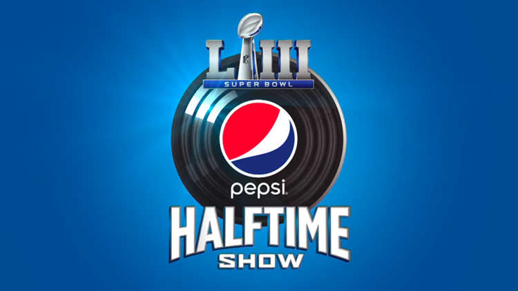
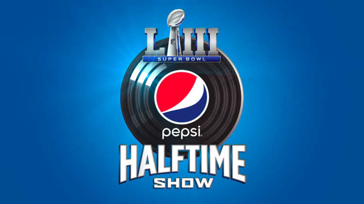
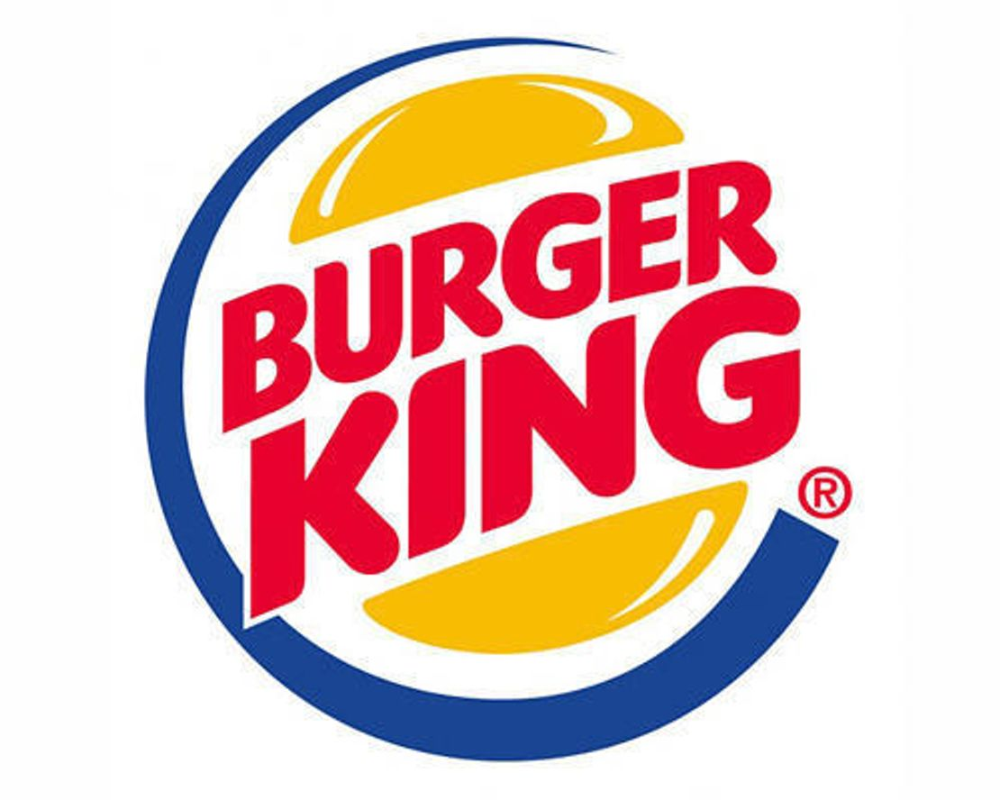
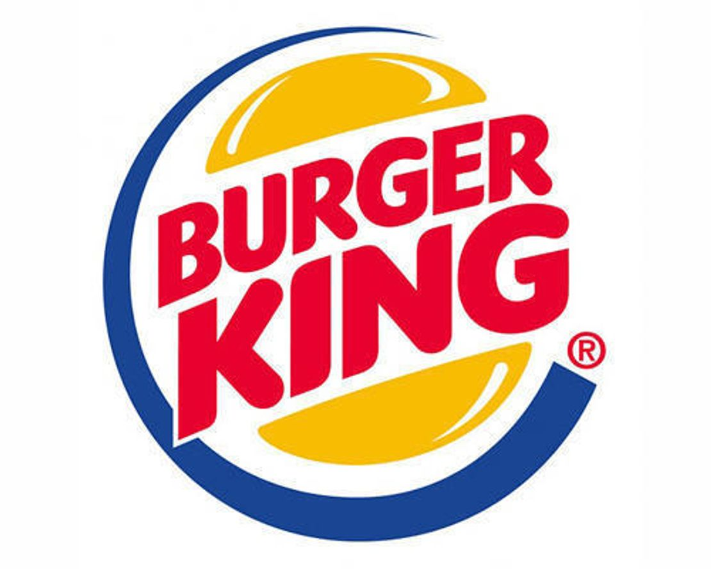

Meet Carmen Carter
Carmen Carter's musical career has been undeniable eventful and exciting. From radio to television, the big screen and all in between, Carter delivers with a style that mesmerizes and captivates her listeners. Whether she’s singing background vocals on recordings with Katy Perry, Adele, Kelly Clarkson, or singing lead with Adam Levine at the Super Bowl LIII, GMA, Dancing with the Stars or on the current 2022 Prudential “Whose Your Rock” national commercial spot, Carter’s dynamic energy packs a powerful punch.
 

Carter’s talents are not limited to the studio, she has performed live with artists such as, Trey Songz , Juicy J, John Legend, Common, Mary J Blige, Cynthia Erivo, Aloe Blacc, and Christina Aguilera, to name a few. In addition, Carter renders convincing on and off camera contributions on the big screen with performances on: America’s Got Talent, The Talk, American Refugee, Disney Live action: The Lion King, Toy Story 4, The Nutty Professor II, and much more.
Television audiences were also treated to Carter’s musical talents which can be seen on Jimmy Kimmel Live, Ellen, and KTLA Morning News. She has blanketed the television screen with unforgettable performances on Superkitties, Family Guy, American Dad, Arrested Development, South Park, King of the Hill, Ally McBeal, Friends, Married with Children, Family Matters, Proud Family etc. Carter also singings on the theme songs for shows such as Moesha, Sister Sister, Touched by an Angel, Hangin’ with Mr. Cooper, Strong Medicine, and much more.

Please don’t grab the remote during station break because Carter will probably deliver a memorable melodic melody for Smart and Final, Reebok, Toyota, Kmart, McDonald’s, Burger King, Jack in The Box, Coca Cola or Michelob as only she can. So, from films such as Guardians of the Galaxy, Boss Baby and Lego Batman to the Oscars, it’s clear, Carmen Carter’s been there and done that.
 
